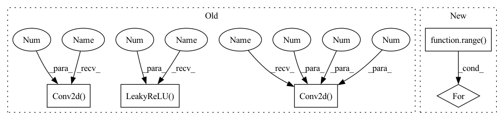

Pattern ID :1344

Before Change
nn.Conv2d(3, 64, 5, stride=2, padding=2), nn.LeakyReLU(0.2)))
self.conv_blocks.append(
nn.Sequential(
nn.Conv2d(64, 128, 5, stride=2, padding=2),
nn.BatchNorm2d(128), nn.LeakyReLU(0.2)))
self.conv_blocks.append(
nn.Sequential(
nn.Conv2d(128, 256, 5, stride=2, padding=2),
nn.BatchNorm2d(256), nn.LeakyReLU(0.2)))
self.conv_blocks.append(
nn.Sequential(
After Change
// build up downsampling backbone (excluding the output layer)
curr_channels = base_channels
for _ in range(self.num_downsamples):
self.conv_blocks.append(
ConvModule(
curr_channels,
curr_channels * 2,
In pattern: SUPERPATTERN
Frequency: 3
Non-data size: 5
Instances
Fragment ID: 3877823
Project Name: open-mmlab/mmgeneration
Commit Name: e6233adabc8816f01d309e057be20fae845cdd3c
Time: 2021-04-27
Author: yangyfaker@gmail.com
File Name: mmgen/models/architectures/lsgan/generator_discriminator.py
M Class Name: LSGANDiscriminator
N Class Name: LSGANDiscriminator
M Method Name: __init__(10)
N Method Name: __init__(1)
M Parent Class: nn.Module
N Parent Class: nn.Module
M File Name: mmgen/models/architectures/lsgan/generator_discriminator.py
N File Name: mmgen/models/architectures/lsgan/generator_discriminator.py
M Start Line: 107
M End Line: 125
N Start Line: 220
N End Line: 277
'>
Before Change
nn.Conv2d(3, 64, 5, stride=2, padding=2), nn.LeakyReLU(0.2)))
self.conv_blocks.append(
nn.Sequential(
nn.Conv2d(64, 128, 5, stride=2, padding=2),
nn.BatchNorm2d(128), nn.LeakyReLU(0.2)))
self.conv_blocks.append(
nn.Sequential(
nn.Conv2d(128, 256, 5, stride=2, padding=2),
nn.BatchNorm2d(256), nn.LeakyReLU(0.2)))
self.conv_blocks.append(
nn.Sequential(
After Change
// build up downsampling backbone (excluding the output layer)
curr_channels = base_channels
for _ in range(self.num_downsamples):
self.conv_blocks.append(
ConvModule(
curr_channels,
curr_channels * 2,
'>
Fragment ID: 3877822
Project Name: open-mmlab/mmgeneration
Commit Name: e6233adabc8816f01d309e057be20fae845cdd3c
Time: 2021-04-27
Author: yangyfaker@gmail.com
File Name: mmgen/models/architectures/lsgan/generator_discriminator.py
M Class Name: LSGANDiscriminator
N Class Name: LSGANDiscriminator
M Method Name: __init__(10)
N Method Name: __init__(1)
M Parent Class: nn.Module
N Parent Class: nn.Module
M File Name: mmgen/models/architectures/lsgan/generator_discriminator.py
N File Name: mmgen/models/architectures/lsgan/generator_discriminator.py
M Start Line: 107
M End Line: 125
N Start Line: 220
N End Line: 277
'>
Before Change
// Upsampling convolutional layer.
self.upsampling = nn.Sequential(
nn.Conv2d(64, 64, (3, 3), (1, 1), (1, 1)),
nn.LeakyReLU(0.2, True)
)
// Reconnect a layer of convolution block after upsampling.
self.conv3 = nn.Sequential(
nn.Conv2d(64, 64, (3, 3), (1, 1), (1, 1)),
nn.LeakyReLU(0.2, True)
)
After Change
// Upscale block
upsampling = []
for _ in range(2):
upsampling.append(UpsampleBlock(64))
self.upsampling = nn.Sequential(*upsampling)
// Output layer.
'>
Fragment ID: 3877827
Project Name: lornatang/esrgan-pytorch
Commit Name: a9031d71f6f27449fe63ec703344577e35fa87cb
Time: 2022-04-15
Author: liuchangyu1111@gmail.com
File Name: model.py
M Class Name: Generator
N Class Name: Generator
M Method Name: __init__(1)
N Method Name: __init__(1)
M Parent Class: nn.Module
N Parent Class: nn.Module
M File Name: model.py
N File Name: model.py
M Start Line: 149
M End Line: 173
N Start Line: 120
N End Line: 147
'>
Before Change
self.period = period
self.discriminator = nn.ModuleList([
nn.Sequential(
nn.utils.weight_norm(nn.Conv2d(1, 64, kernel_size=(5, 1), stride=(3, 1))),
nn.LeakyReLU(0.2, inplace=True),
),
nn.Sequential(
nn.utils.weight_norm(nn.Conv2d(64, 128, kernel_size=(5, 1), stride=(3, 1))),
nn.LeakyReLU(0.2, inplace=True),
),
nn.Sequential(
nn.utils.weight_norm(nn.Conv2d(128, 256, kernel_size=(5, 1), stride=(3, 1))),
nn.LeakyReLU(0.2, inplace=True),
),
nn.Sequential(
After Change
layer = []
self.period = period
inp = 1
for l in range(4):
out = int(2 ** (5 + l + 1))
layer += [
nn.utils.weight_norm(nn.Conv2d(inp, out, kernel_size=(5, 1), stride=(3, 1))),
nn.LeakyReLU(0.2)
'>
Fragment ID: 3877826
Project Name: coqui-ai/tts
Commit Name: c20a6b118555830d16437d294cc328f7e715fa32
Time: 2021-04-08
Author: rishikksh20@gmail.com
File Name: TTS/vocoder/models/multi_period_discriminator.py
M Class Name: PeriodDiscriminator
N Class Name: PeriodDiscriminator
M Method Name: __init__(2)
N Method Name: __init__(2)
M Parent Class: nn.Module
N Parent Class: nn.Module
M File Name: TTS/vocoder/models/multi_period_discriminator.py
N File Name: TTS/vocoder/models/multi_period_discriminator.py
M Start Line: 11
M End Line: 33
N Start Line: 9
N End Line: 24